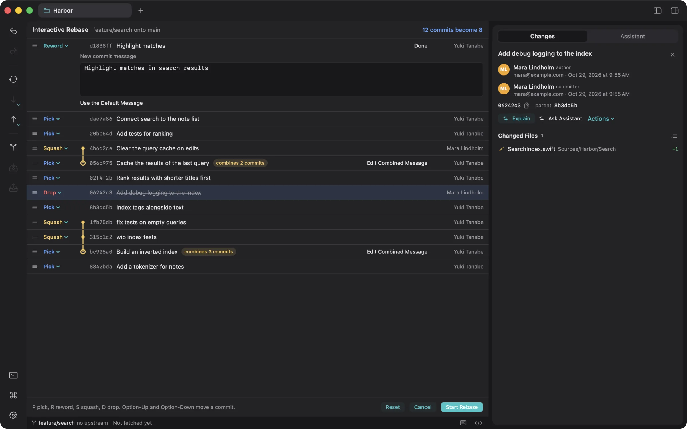
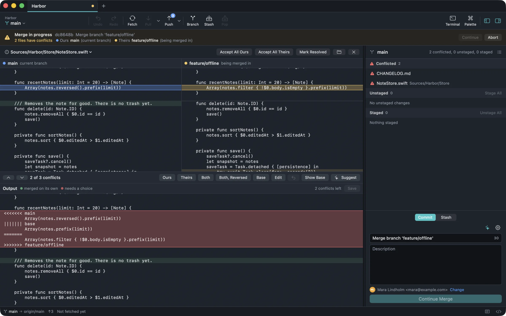
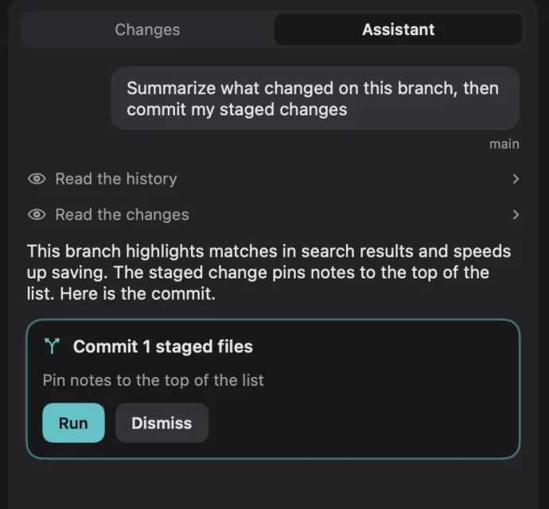

GuideUse
Pro tools
Interactive rebase, the conflict editor, pull requests and AI.
These need Branchlane Pro. Every new eligible subscriber can try them free for 14 days.
Interactive rebase#
Right-click a commit and choose Interactive Rebase. Reorder, reword, squash and drop, then start the rebase. Undo takes the whole rebase back.

Keys are faster in the list: P pick, R reword, S squash, D drop, and ⌥↑ ⌥↓ to move a commit.
Stacked branches#
Right-click a branch and choose New Branch Stacked on it. Work on the new branch as usual. When the branch below is amended or rebased, right-click it and choose Restack: every branch stacked above moves onto its parent with only its own commits. Each move is an ordinary rebase that Undo takes back. If one stops on a conflict, settle it, finish the rebase and choose Restack again; branches already up to date are skipped. Remove from Stack takes a branch out.
Conflict editor#
When a merge, rebase or cherry-pick stops, open a conflicted file. Both sides sit side by side at the top, and the result is below. Conflict warnings show collisions before you merge.

- Ours. The branch you have checked out.
- Theirs. The branch being merged in.
- Result. Conflicts you have not settled stay red, and parts that merged on their own are marked.
- Choose for each conflict. Your change, theirs, both, both in reverse order, or the base, or edit it yourself. When all are done, press Continue in the bar at the top.
AI and the assistant#
Choose a provider in Settings > Assistant: a local model, your own API key, or Apple's on-device model. Nothing is sent until you ask. Ask the assistant with ⇧⌘I. Changes it suggests wait on a card until you run them.

To run a model on this Mac, pull one with Ollama and put http://localhost:11434 in Settings > Assistant.
ollama pull llama3.2
curl -s http://localhost:11434/v1/modelsMore Pro tools#
- Compare, Git Flow and patches are in the left panel and the right-click menus.
- Pull requests and issues: add a GitHub, GitLab or Bitbucket token in Settings > Integrations. For Bitbucket Cloud, enter an Atlassian API token as
email:token, or a repository or workspace access token on its own. It stays in your Keychain and talks to the host directly. - Themes: themes beyond White and Black are Pro. You can preview every theme in Settings > Themes on the free plan.